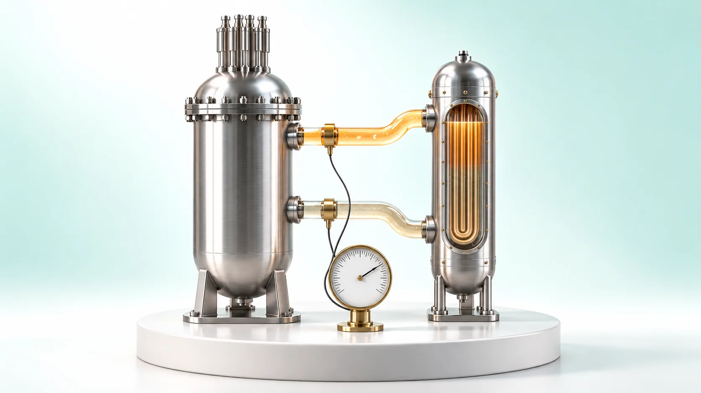
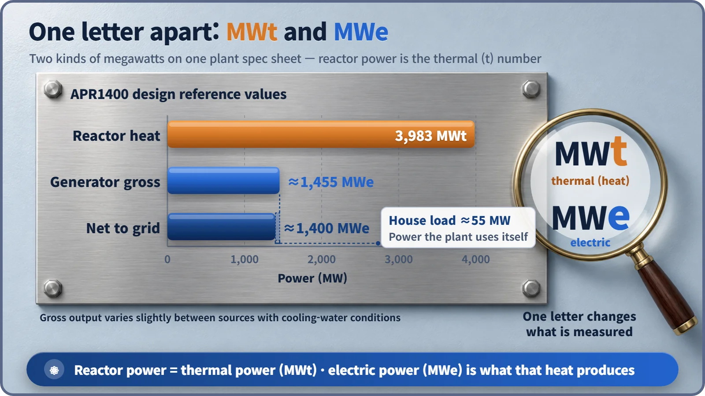
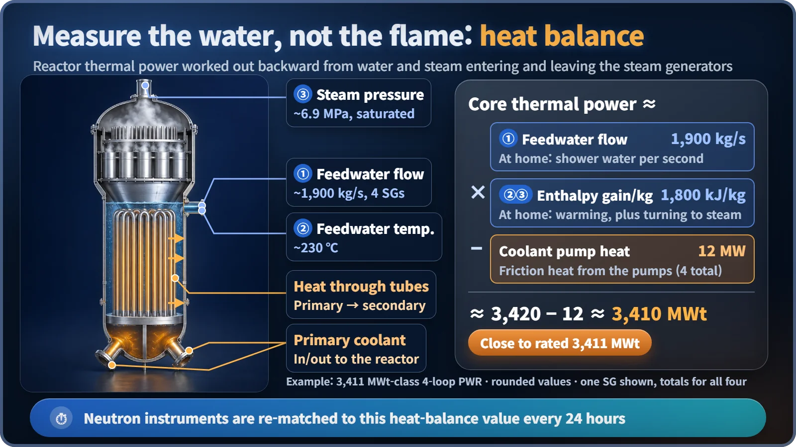

Plant Operation, Control & the Grid · 230
You Can't See the Flame, but the Shower Knows — Why Reactor Power Means Thermal Power
The t in MWt says it all: a reactor's power is the heat it gives the coolant, calculated from steam generator water and steam and checked against neutron instruments every day.

At a nuclear plant, "reactor power" means thermal power: the heat the core hands to the coolant. So "100% power" means 100% of rated thermal power, not electricity. That invisible heat is calculated from the water and steam in the steam generators, and fast neutron instruments are matched to it every day. [1]
"Unit 1 reaches 100% power." 100% of what? Not electricity, it turns out, but heat. Here is what reactor power means, and how you measure a quantity you can't see.
One letter on the tag: t and e
South Korea's APR1400 spec sheet lists two numbers: 3,983 MWt and about 1,400 MWe. The t (thermal) is the heat the core produces and passes to the cooling water; the e (electric) is the electricity made from that heat through steam, turbine and generator. The generator's gross output is about 1,455 MWe; subtract the house load the plant uses for its own pumps and fans, about 55 MW, and the net output to the grid is about 1,400 MWe, the "1400" in the name. The reactor's heat is close to three times that. [2]

Why only a little over a third of the heat becomes electricity is a story for another day. The one idea to hold on to: reactor power = heat.
Why use heat as the yardstick?
A reactor's only job is to make heat by fission; electricity comes later, and the fraction converted depends on conditions outside the reactor. With cold seawater in winter a bit more electricity comes out, in summer a bit less, while the reactor does the same work. Fuel temperature, cooling needs and accident starting conditions are all set by the amount of heat, so each operating license states a rated thermal power, the maximum for normal operation. "100% power" means 100% of that. [1]
Measuring a water heater's strength with the shower
No thermometer can read the heat of tens of thousands of fuel rods inside a thick steel vessel. But think of a gas water heater: you can't see the flame, yet the amount of shower water per second times how much it warmed gives the heat delivered. A nuclear plant does the same with a secondary-side heat balance on its steam generators:
Thermal power ≈ feedwater flow × enthalpy rise per kg − heat added by the reactor coolant pumps
Enthalpy is the heat energy carried by 1 kg of water or steam, including the heat to boil it. In a rounded example from a large four-steam-generator pressurized water reactor:
| Term | Value (four units combined) |
|---|---|
| Feedwater flow | about 1,900 kg/s |
| Enthalpy rise per kg (feedwater about 230 ℃ to saturated steam at about 6.9 MPa) | about 1,800 kJ/kg |
| Heat taken by the steam generators | 1,900 × 1,800 ≈ 3,420 MW |
| Minus coolant pump heat | about 12 MW |
| Core thermal power | ≈ 3,410 MWt (rated: 3,411 MWt) |
Real calculations add corrections such as piping heat loss. And unlike shower water, the secondary water isn't thrown away; it returns to be heated again. [3]

A fast eye and an accurate scale, checked every day
The heat balance is accurate but slow. Moment-to-moment power is watched by ex-core neutron detectors outside the reactor vessel: leaking neutrons are proportional to the fission rate, so they react instantly and supply the automatic overpower trip signal. But their reading drifts with control rod positions and coolant temperature, so it is matched to the heat balance. For example, U.S. standard technical specifications compare the two every 24 hours and require adjustment if the heat balance exceeds the instrument reading by more than 2% of rated thermal power, like setting a fast but slowly lagging watch to standard time once a day. [4]
A tug-of-war over 2%
U.S. rules have required emergency core cooling analyses at 102% of rated thermal power, allowing for about 2% error in measuring heat. Plants that prove smaller error, for example with ultrasonic feedwater flowmeters, can have rated thermal power raised by what they recover, often about 1.7%. Measurement precision is both safety margin and electricity. [5]
Key takeaways
- Reactor power is thermal power (MWt); electric power (MWe) is what that heat produces.
- APR1400: 3,983 MWt of heat, about 1,455 MWe gross and about 1,400 MWe net.
- "100% power" means 100% of rated thermal power, so electricity varies slightly with the season.
- Thermal power is calculated from a secondary-side heat balance; neutron instruments are matched to it every 24 hours.
- Even after shutdown, decay heat lingers, so thermal power does not drop straight to zero.
The t in MWt holds the reactor's identity in a single letter. Next time you read "100% power," picture the invisible heat being weighed behind it, day after day.